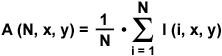

Image averaging is a digital image processing technique that is often employed to enhance video images that have been corrupted by random noise. The algorithm operates by computing an average or arithmetic mean of the intensity values for each pixel position in a set of captured images from the same scene or view-field. Each corrupted image has a stable signal component and a random noise component. In the averaging process, the signal component of the image remains the same, but the noise component differs from one image frame to another. Because the noise is random, it tends to cancel during the summation. When the averaged image is computed, the image signal component has a stronger influence over the summation than does the noise component. The result is an enhanced signal component, while the noise component tends to be reduced by a factor approximately equal to the square root of the number of images averaged.

Where the sum is taken over I(i, x, y), which is the pixel intensity value of the ith frame from the N set of image frames.
At every pair of coordinates (x, y) the noise is un-correlated(in any two frames, at coordinate (x, y) the value of noise increases or decreases mutually-exclusively) and has zero-average.
At all (x,y) coordinates of N noisy frames our variance is 1⁄N • σ2 I(N, x, y). This is also the value of the variance at any point(any coordinate (x,y)) of our averaged image i.e σ2A(N,x,y) = 1⁄N • σ2 I(N, x, y). This indicates that our expectation is that by averaging N many noisy images at coordinate (x, y) we'll get a pixel value which is relatively less noisy.
When utilized in the processing of video images, the image averaging technique improves image spatial resolution (visual quality) at the cost of temporal resolution (a decrease in the number of image frames that can be displayed per second).
References...